PAGE: mkirk-wrath.html — REBUILT per Matt's direction to treat Wrath as live/pre-sale, same as Clutch: status flipped from "looking for advanced readers" to pre-sale framing, a marketing/review carousel added (structure only — 4:5 slots for Matt's marketing material, no reviews yet), and the Teacher Supplement surfaced as a prominent storefront card. Real Q&A copy and real cover art dropped in 2026-07-29. 2026-07-30: "About the Book" rebuilt again — the numbered Q&A list (which duplicated the Books catalog page's format) is now flowing prose + a "Shelve Under" aside, matching Balance's real structure. Added a "Two Officers" POV section (Ellis/Eck, mirrors Balance's Four Voices card grid — Matt said he'll write the fuller character copy himself) and a placeholder "A Note from the Author" section (Balance's is real; Wrath's has none yet). This page is now the template for Field Tested, No Average Brain, and Seven. GFS Didot applied to all Wrath title treatments per Matt's "more Greek font" note. 2026-07-30: dropped the "Buy on Amazon" storefront card below the POV section — Matt noted it was unclear why it was there, and it duplicated the hero's own "Buy on Amazon" CTA above. Teacher Supplement is now the sole card there, elevated to a full-width raised-profile callout and recolored purple (was bronze, matching the rest of the page) so it reads as its own product rather than blending in.2026-07-30: moved the Teacher Supplement card up — now sits right after "About the Book," ahead of the "Two Officers" POV section, per Matt's request to give it more visibility. Also forced the "About the Book" heading ("Two officers. Opposite sides of the wire.") onto two lines, one sentence per line, so it doesn't wrap mid-sentence.2026-07-30: added visible placeholder boxes to the Ellis and Eck photo slots in the "Two Officers" cards (dashed box, matches the sitewide Cover Art Policy) — Matt has real photos to drop in later; previously a missing char-ellis.jpg/char-eck.jpg just made the photo area disappear with no visible placeholder.2026-07-30: wired in Matt's real filenames — Ellis/Eck cards, the book cover, and the "Early reads" carousel's structure slots (expanded from 4 to Matt's 10 real marketing/poem images) all got real asset paths for the first time.Same day, later: Matt did a full asset rename pass — every filename from the edit above was updated a second time to match his final naming scheme. Ellis/Eck now point at char_wrath_ellis.png/char_wrath_eck.png, the cover (incl. the ARC page, which no longer has its own separate cover file) points at cover_warth.png, and the carousel points at card_wrath_iliadOpening/andromache/achilles/shawstewart/owen/sorley/dulce/gas/leaves.png plus card_warth_owen.png — see the Cover Art Policy note at the top of the stylesheet for the full sitewide mapping. The earlier truncated-filename flag is resolved: it's card_wrath_andromache.png.
Literary Fiction · Historical
The Wrath of Archie Ellis
A retelling of the Iliad – Ypres, 1917
A novel by m kirk
Pre-sale · Releasing October 1
The book is built, chapter for chapter, on the structure of the Iliad: Ellis is Achilles, Eck is Hector.
[Hook line above is pulled verbatim from Matt's own Q&A copy, not a quoted excerpt from the manuscript — happy to swap in a real epigraph/line from the book once one's chosen.]
Status
Pre-sale · Oct 1, 2026
Format
Hardcover / Paperback / Kindle
Genre
Literary Fiction · Historical
About the Book
Two officers. Opposite sides of the wire.
Set during the Third Battle of Ypres in the autumn of 1917, the novel follows two officers on opposite sides of the wire: Captain Archie Ellis, the finest officer in the Salient — a Victoria Cross recipient and a 1912 Olympic gold medalist — and Hauptmann Harald Eck, a civil engineer from Dresden holding his regiment together while he waits for what he has known for weeks is coming. It follows both men, and the men around them, from the opening days of the offensive toward a single night near its end — the night the whole book exists to reach.
The book is built, chapter for chapter, on the structure of the Iliad: Ellis is Achilles, Eck is Hector.
Most novels that borrow from the Iliad use it as decoration — an epigraph, a passing gesture. Here the structure is load-bearing: every chapter has a specific Homeric counterpart, tracked and held to, without Troy, Achilles, or Homer ever being named on the page. The German side is written with the same weight, interiority, and precision as the British — Eck is not the enemy standing in for an idea of the enemy, and the book's entire argument depends on that being true.
The prose does not editorialize. Efficiency and bodies are rendered in the same flat register, and that refusal to soften or elevate is where the book does its damage. Nothing is explained to you as tragic. You are only shown what happened, and left to carry it.
It rewards attention: the parallels are encoded, not explained, and a reader who knows the Iliad will find a second book running underneath the first.
For readers of Pat Barker's Regeneration, Sebastian Faulks's Birdsong, and Madeline Miller's The Song of Achilles.
Captain, B Company. Victoria Cross recipient. 1912 Olympic gold medalist. The finest officer in the Salient — until an order he refuses to follow costs two hundred and forty-seven men their lives. [Placeholder — Matt to expand.]
POV Character
II
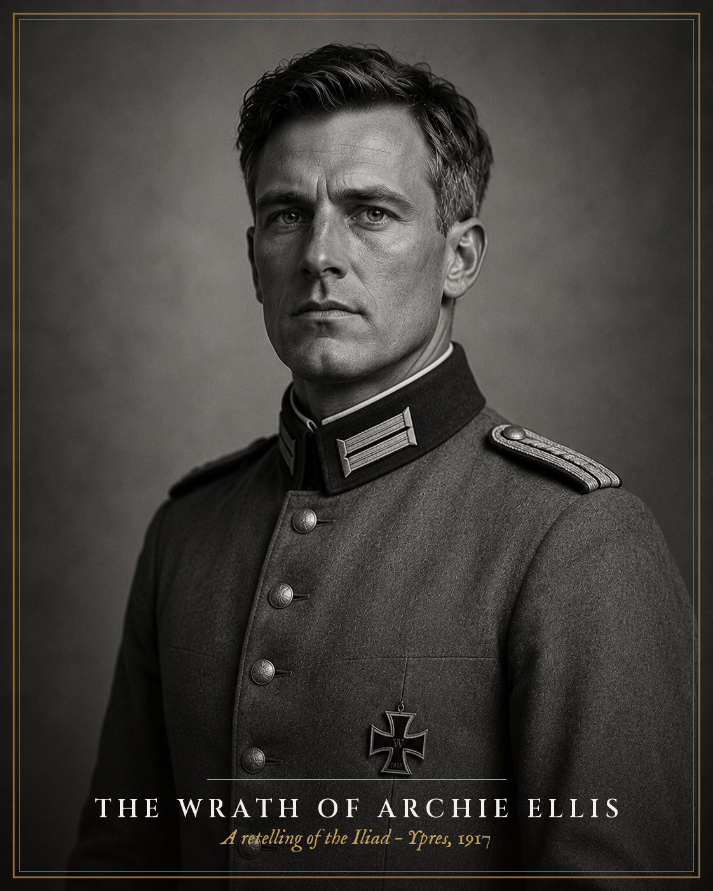
Placeholder photoHarald Eck
Hector
Harald Eck
Hauptmann. A civil engineer from Dresden, holding his regiment together while he waits for what he's known for weeks is coming. [Placeholder — Matt to expand.]
POV Character
Early reads
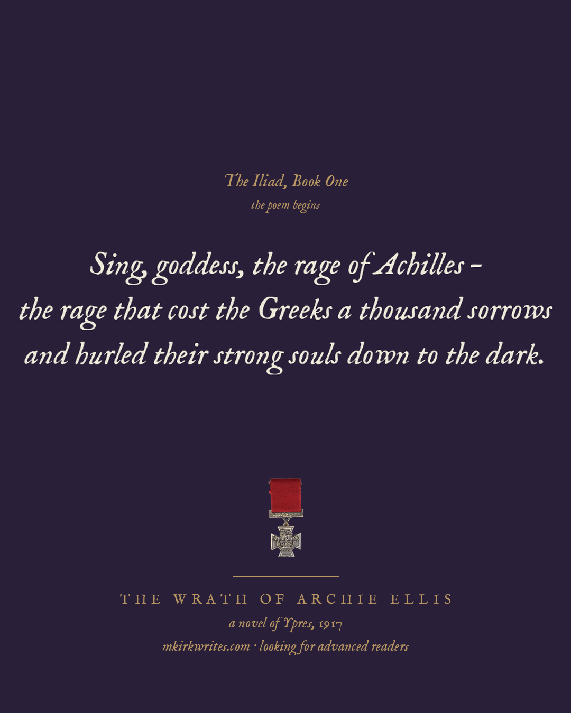
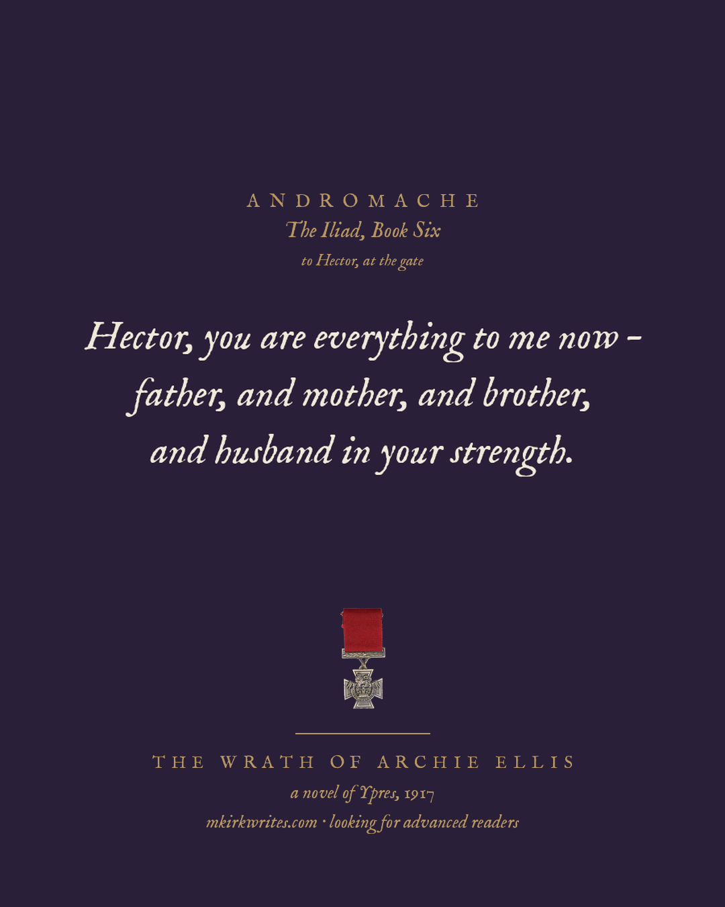
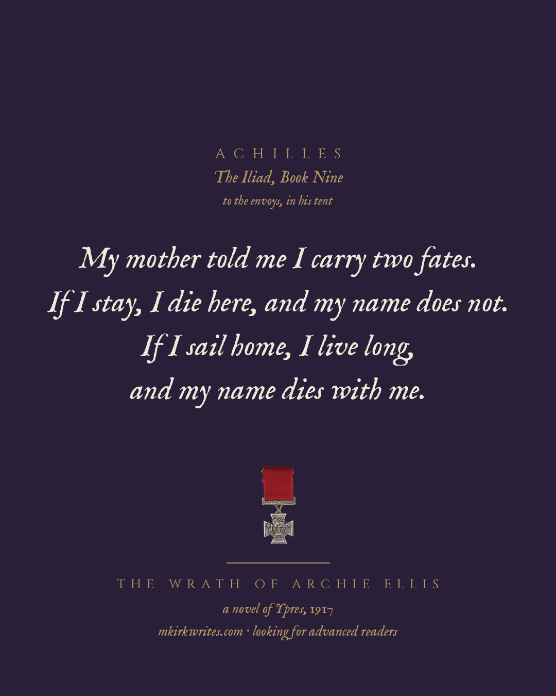
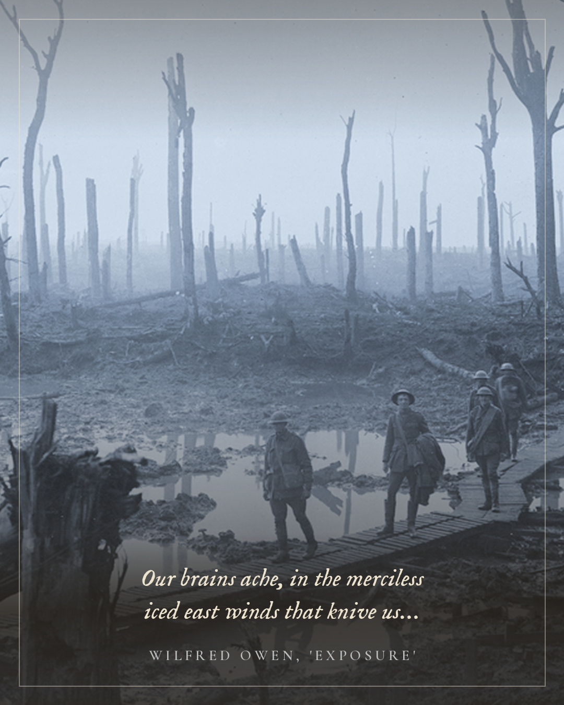
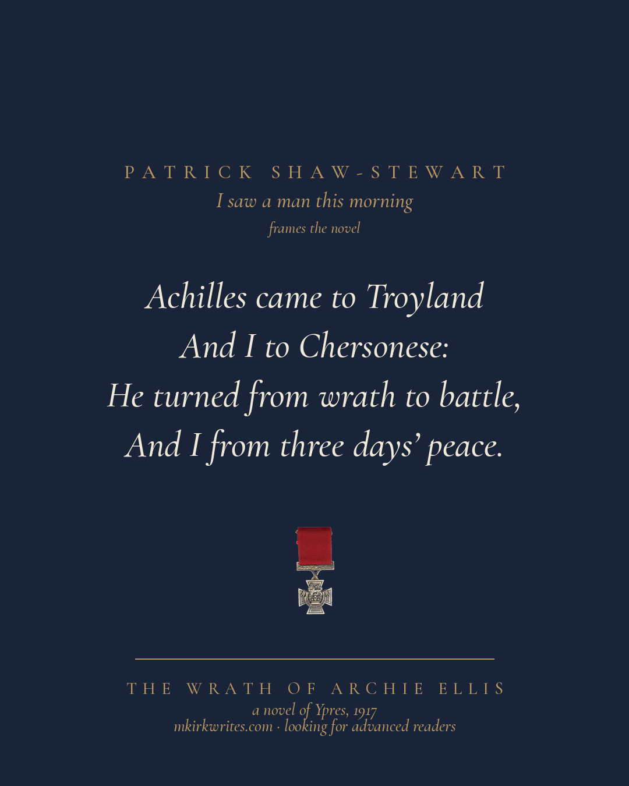
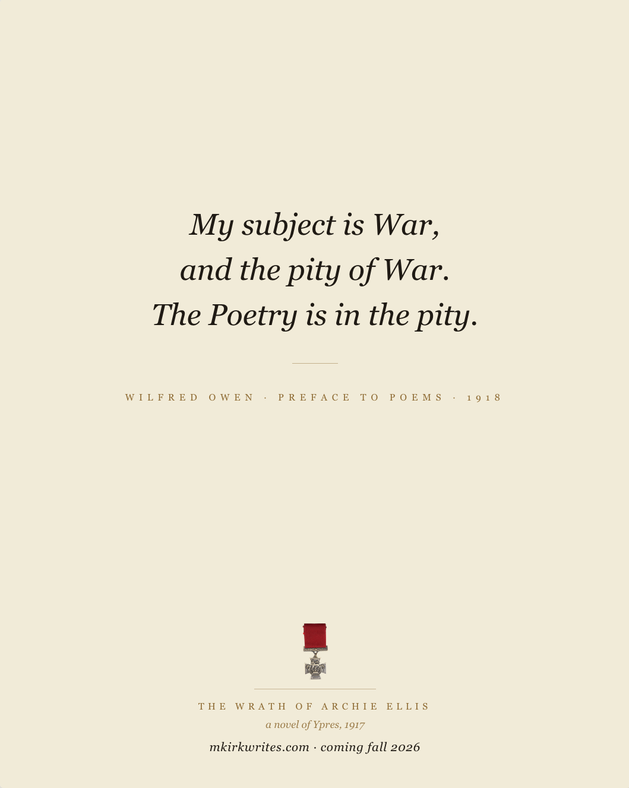
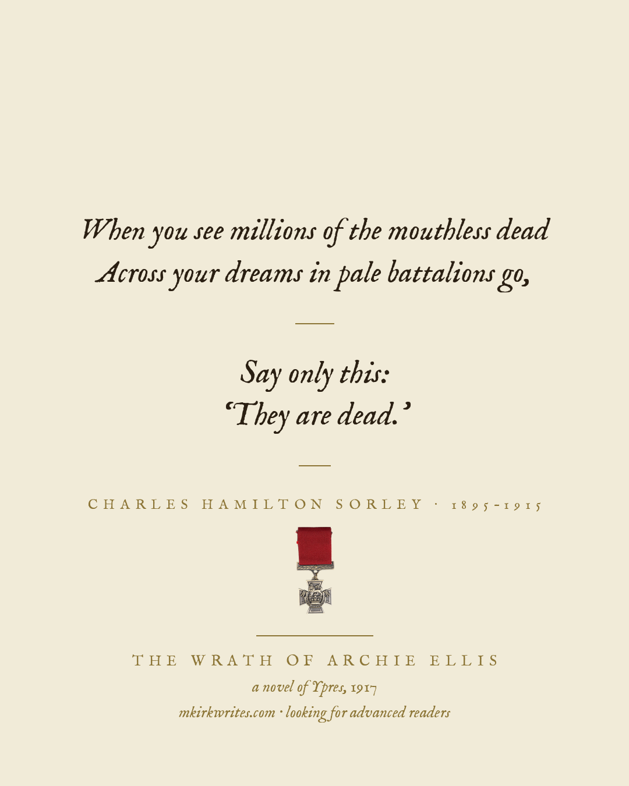
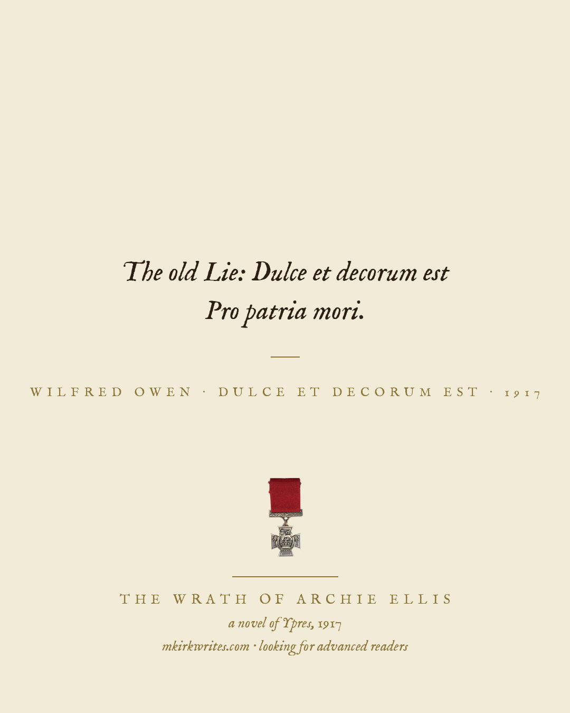
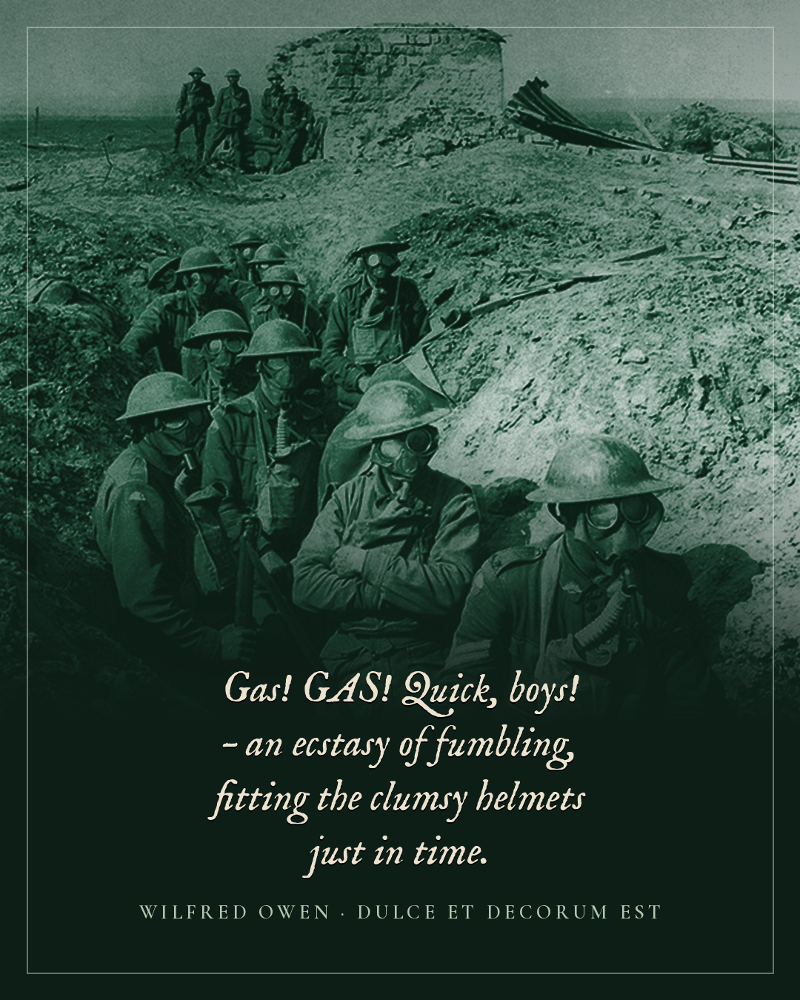
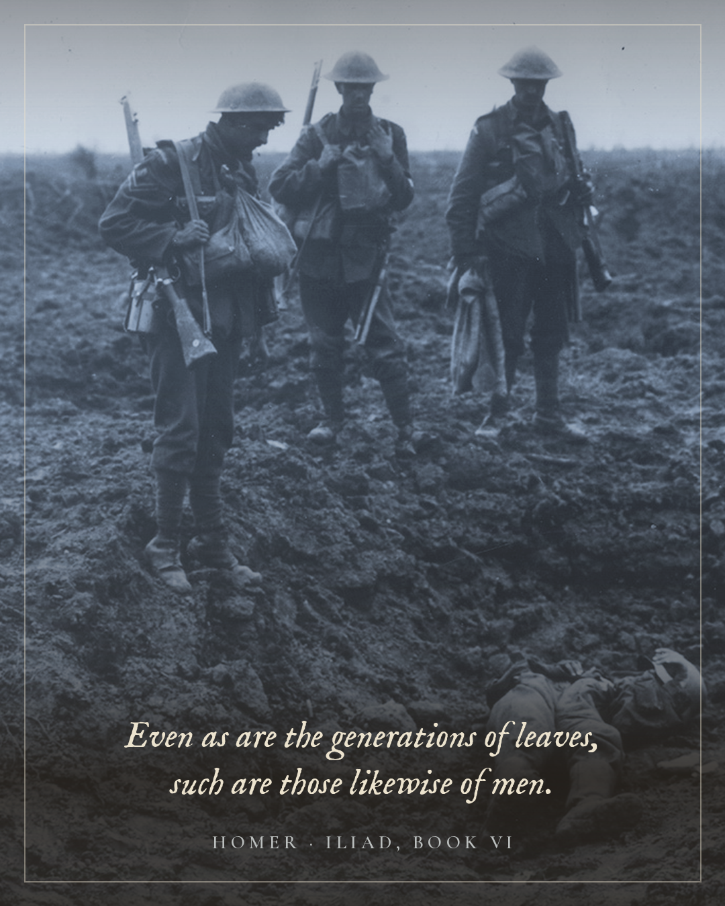
There's a companion Teacher Supplement → — digital from this site, hardcopy on Amazon.
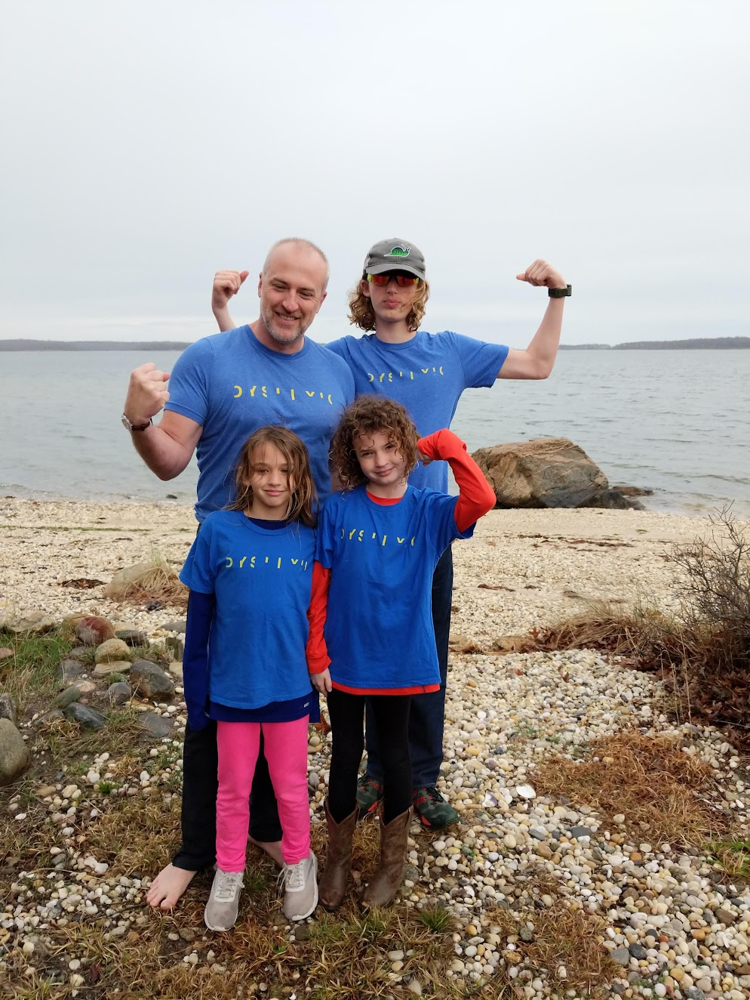
A Note from the Author
[Placeholder — Matt's note on writing Wrath goes here: why this book, why the Iliad structure, why Ypres. Matching Balance's author's-note section, which is real, personal, first-person copy Matt wrote himself.]